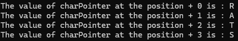

Assumptions for practice: char = 1 byte, short = 2 bytes, int = 4 bytes. Examples assume little-endian for multi-byte reads.
A pointer stores an address. Printing any pointer with %p shows its address; dereferencing (*ptr) reads the object of the pointer’s type at that address.
Pointer arithmetic: moves in elements, not bytes:new_address = base_address + n * sizeof(type)
Dereferencing depends on type: *cPtr → 1 byte, *sPtr → 2 bytes, *iPtr → 4 bytes.
Operator precedence: *(cPtr + 1) ≠ *cPtr + 1.
Bounds & safety: Stay within array bounds. Casting char* to short*/int* can cause undefined behavior.
| Index | Value | Char |
|---|---|---|
| 0x107 | 00 | '' |
| 0x106 | 65 | 'e' |
| 0x105 | 6C | 'l' |
| 0x104 | 70 | 'p' |
| 0x103 | 6D | 'm' |
| 0x102 | 61 | 'a' |
| 0x101 | 78 | 'x' |
| 0x100 | 45 | 'E' |
Note: The starting address of 0x100 and that the location of each character goes up 1 space of memory. Each space is equal to one unit of memory (8 bits or 1 byte). A char is one byte big, so each slot of memory can hold one char.
Pointers - storing a memory address:
char cExample[] = "Example"; char *cPtr = cExample; short *sPtr = (short*)cExample; int *iPtr = (int*)cExample;
Dereferencing - visiting a location in memory to read the valye:
cPtr + 1 → points to 'x' (byte 1)
*(cPtr + 1) → 0x78 ('x')
sPtr + 1 → points to 'a' 'm' (bytes 2..3)
*(sPtr + 1) → 0x6D61
Consider the following unsigned integer: 1,398,030,674, and lets put that into memory. We'll also create a char pointer and assign it the address of our int
//Declare the number
int theNumber = 1398030674;
//create a character pointer, and assign it the value of theNumbers address.
char *charPointer = &theNumber; //reminder that ampersand (&) grabs the address of a variable, not the value stored thereLets assume that theNumber get the address 0x120, and fill in our memory map table with the converted hexadecimal values, we'll treat the charPointer as a 4 byte address for this exercise
1398030674 = 0x53544152
| Address | Alias | Value |
| 0x127 | 0x00 | |
| 0x126 | 0x00 | |
| 0x125 | 0x01 | |
| 0x124 | charPointer | 0x20 |
| 0x123 | 0x53 | |
| 0x122 | 0x54 | |
| 0x121 | 0x41 | |
| 0x120 | theNumber | 0x52 |
charPointer stores the address to theNumber, we can access the values stored there and de-reference them as a char rather than an integer. This is because the Data Type of the Pointer determines how the data is read, and in how many chunks. A char pointer reads one byte values.
printf("The value of charPointer at the position + 0 is : %c\n", *charPointer);
printf("The value of charPointer at the position + 1 is : %c\n", *(charPointer + 1));
printf("The value of charPointer at the position + 2 is : %c\n", *(charPointer + 2));
printf("The value of charPointer at the position + 3 is : %c\n", *(charPointer + 3));
//This will print out the hexadecimal value of each slot as a character
//rather than all four slots as one iteger